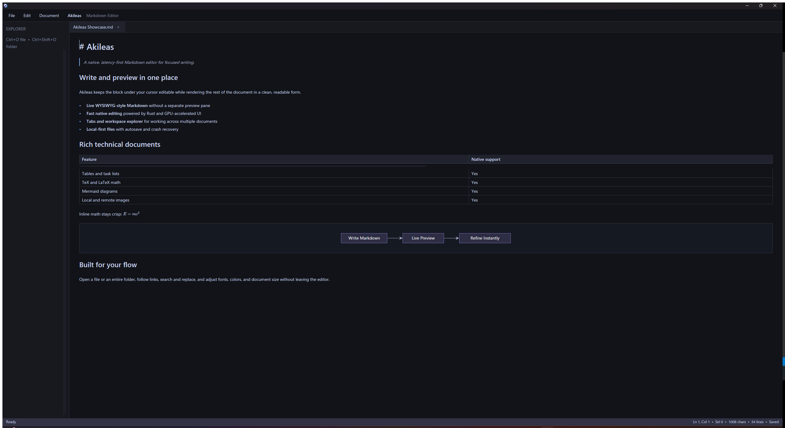

01
实时行内所见即所得 · WYSIWYG In-Place
无需分裂的双栏对照。仅在光标激活的局部块展示原始 Markdown 标记；标题、列表、表格、超链接和加粗强调实时排版，保持整洁与连贯。
捷足疾驰 · 本地优先 · 护眼色调 · 开源原生
以荷马史诗中“捷足的阿喀琉斯”命名。Akileas 专为极致速度与长久专注而生：光标所在处即时编辑，光标之外如古典羊皮纸般优雅呈现。毫秒级增量投影与纯净护眼底色，彻底告别打字卡顿与双栏割裂。
Vision & Philosophy · 初心与愿景
在荷马史诗《伊利亚特》中，英雄阿喀琉斯被冠以“捷足”（πόδας ὠκὺς Ἀχιλλεύς）之誉——象征着无与伦比的迅捷、敏锐与纯粹的力量。Akileas 的诞生，就是为了在重度工具繁杂的数字时代，重铸那份纯粹的轻盈与极速。
σευάμενος ὥς θ᾽ ἵππος ἀεθλοφόρος σὺν ὄχεσφιν,
ὅς ῥά τε ῥεῖα θέῃσι τιταινόμενος πεδίοιο·
ὣς Ἀχιλεὺς λαιψηρὰ πόδας καὶ γούνατ᾽ ἐνώμα.
“如同驾车的获胜良驹，舒展着四蹄，在广袤的平原上轻快飞驰；
阿喀琉斯亦是如此，迅疾地迈动着他敏捷的双足与双膝。”
单一连续交互平面 · Continuous Surface
光标所在行即时呈现清晰的 Markdown 源码，光标移开之处立刻恢复为规整优雅的排版效果。无需双屏对比，无缝游走于源码与版面之间。

专为专注而铸 · Purpose-built
轻灵到让人忘记工具的存在，强大到足以胜任最复杂的工程技术文档。
01
无需分裂的双栏对照。仅在光标激活的局部块展示原始 Markdown 标记；标题、列表、表格、超链接和加粗强调实时排版，保持整洁与连贯。
02
全面支持 GFM 规范提示块语法：[!NOTE]、[!TIP]、[!IMPORTANT]、[!WARNING] 与 [!CAUTION]。光标所在行展开原始标记，光标移开后即刻呈现带有柔和主题强调色与微拟真边框的生动呼出卡。
03
完整支持 Markdown 表格列对齐语法（:--- 靠左、:---: 居中、---: 靠右）。单元格之间支持 Tab 与 Shift-Tab 平滑快捷跳转，末尾单元格敲击 Tab 自动智能插入全新数据行。
04
TeX/LaTeX 数学公式、Mermaid 流程图与时序图、GFM 规范表格、任务清单与代码块。无需任何浏览器沙盒与重型 JS 运行时，纯原生 GPU 光速光栅化。
05
每次保存自动留存多达 100 步的本地轻量快照。支持离线差异比对（Diff）、手动检查点与一键回退恢复，完全脱离 Git 也能无忧回滚；配合磁盘有界恢复日志，突发断电不丢一字。
06
引入 SIMD 并行硬件指令优化的 fast_char_count，十万字长篇毫秒级精准切分 ASCII、CJK 双宽字符与标点。状态栏字数、词数、行数指标随键盘击键如呼吸般即时刷新。
07
独立设置中心支持深邃极客暗黑（Default Dark）与古典温润羊皮纸（Eye Care）双重视效模式。所有文档 100% 留存在本地硬盘，零云端账号、零广告、零隐私遥测。
08
深度识别并校验 SKILL.md、AGENTS.md 与 Copilot 配置规范。行内诊断即时提示 Frontmatter 元数据缺失或格式瑕疵，并提供一键安全修复。
全维度工程利器 · Technical Precision
不仅具备宏大的极速架构，更在每一次交互、每一个符号与长篇技术文献的微小细节中千锤百炼。
支持 - [ ] 与 - [x] 任务清单，可在页面上直接鼠标点按勾选或取消；原生支持 <details> 与 <summary>，单击标题随心折叠与展开长篇技术注释。
全面覆盖复杂排版：荧光高亮 ==highlight==、优雅删除线 ~~strikethrough~~、下划线 <u>、键位符 <kbd>Ctrl</kbd>、上标 ^sup^、下标 ~sub~ 与学术级脚注 [^1]。
支持本地相对路径与远程网络图片，支持显式宽度尺寸标注（如 <img width="400">）。独立工作线程异步解码并构建 GPU 纹理缓存，即使浏览图文并茂的十万字巨著也毫无顿挫。
内置平台级 SIMD memmem 检索核心。支持 Ctrl+F 快速查找、Ctrl+H 精准批量替换与 Ctrl+G 行号直达，在百万行超长代码或文档中穿梭自如，搜索永不假死。
退出时精准记录光标字符坐标、视口滚动行号与毫秒级子像素偏移量，重新启动瞬间恢复心流。支持无级切换系统默认字体、衬线体（Serif）或等宽体（Monospace），并支持 10pt–32pt 动态缩放。
支持同时打开多份文档或大型工程文件夹，侧边栏树形浏览并自动扫描 Markdown 文件；原生识别 ```diff``` 代码块，提供红绿色带版本差异对比。
极速架构全景 · Latency-First Architecture
以交互延迟第一为核心契约。击键仅向内存 Rope 提交最小增量事务并瞬时重绘最新快照，全量语法解析、离线排版与持久化全部在后台并发异步收敛。
Formula · Mermaid · Table 互不牵连。 LaTeX 公式独立防抖更新；Mermaid 视口窗口按需编译与滚动瞬时复用；表格自适应内容动态测宽。修改正文绝不触发耗时图表或公式重新计算。
各司其职，坚决杜绝越界开销。 CPU 专精 Rope 内存事务、命中测试、Tree-sitter 增量切片与 SIMD 字符统计；GPU 专精字形图集管理、视口图层合成与矢量图表光栅化。
神盾守护，断电或异常关闭不丢一字。
内置时光机保留多达 100 步轻量快照与离线 Diff 比对；搭配专有 AKREC001 二进制崩溃恢复日志，异步防抖原子落盘，启动即愈。
天然隐私守护 · Private by Default
Akileas 严格在本地处理您的文件。只有在您显式点击外部网络链接或引用的远程在线资源时，才会发生系统级网络交互。
查阅完整隐私条款开启书写 · Start Writing
直接下载开箱即用的 Release 版本，或在 Apache 2.0 协议下自由从源码构建。